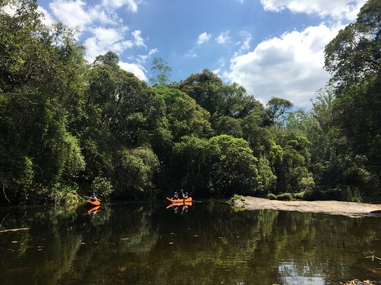
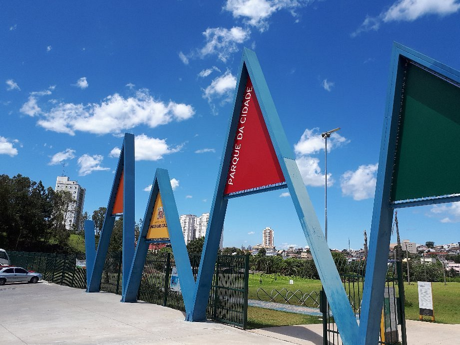
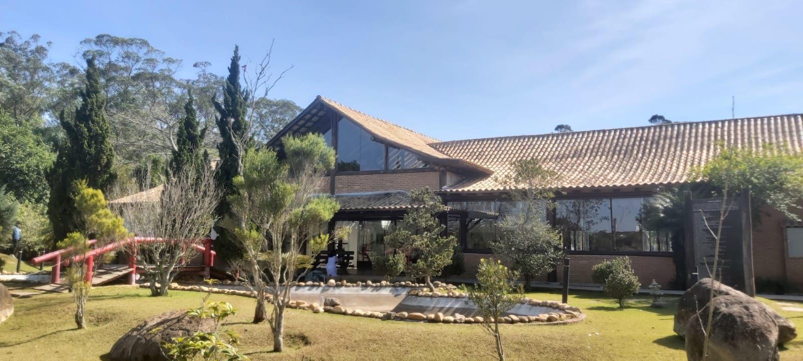
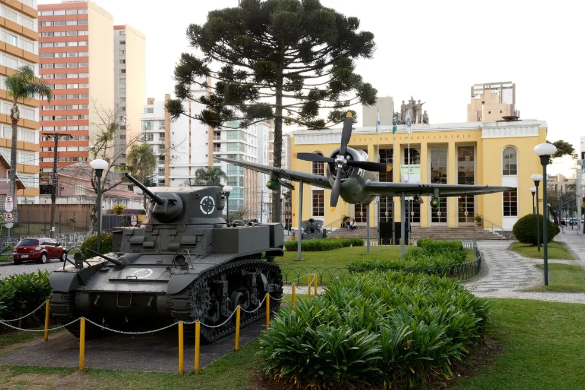
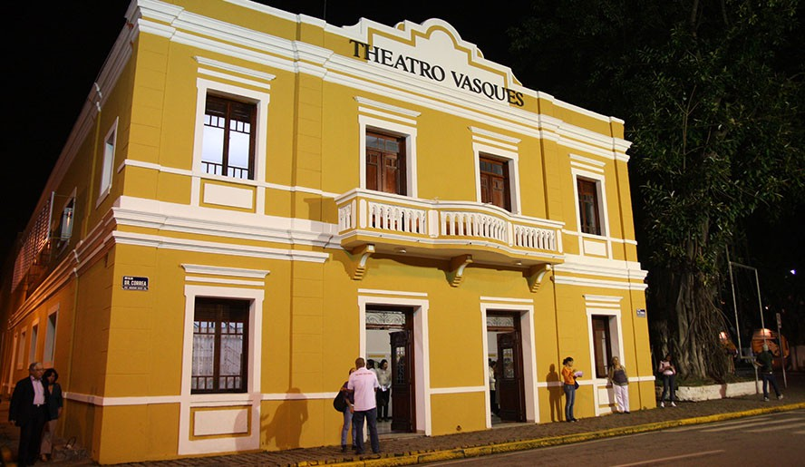
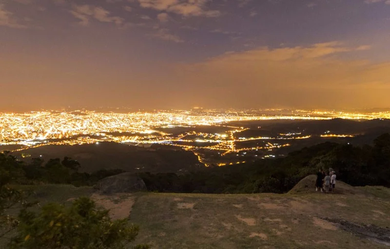
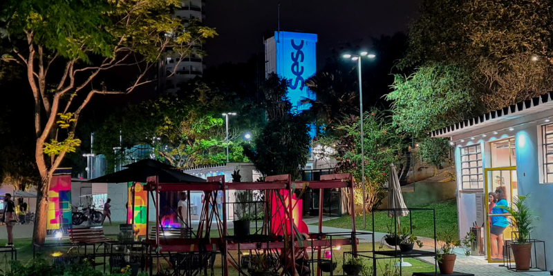

Parque Centenário
Parque da Imigração Japonesa, com quatro lagos, pista de caminhada e entrada gratuita.
Ver a página do local →Mogi das Cruzes
Locais, eventos e programação cultural em um só lugar.
Parque da Imigração Japonesa, com quatro lagos, pista de caminhada e entrada gratuita.
Ver a página do local →
Reserva de Mata Atlântica na Serra do Mar, com trilhas e passarela suspensa. Visitas agendadas.

Projeto de Ruy Ohtake com pista de caminhada, quadras esportivas, orquidário e teatro de arena.

Conta a história da imigração japonesa; fica dentro do Parque Centenário.

Memória dos pracinhas da região que lutaram na Segunda Guerra Mundial.

Espetáculos de teatro, música e dança no centro da cidade.

Mirante na Serra do Itapeti, a cerca de 1.160 m de altitude, com trilhas e voo livre.

Atividades esportivas, culturais, de educação e de saúde.